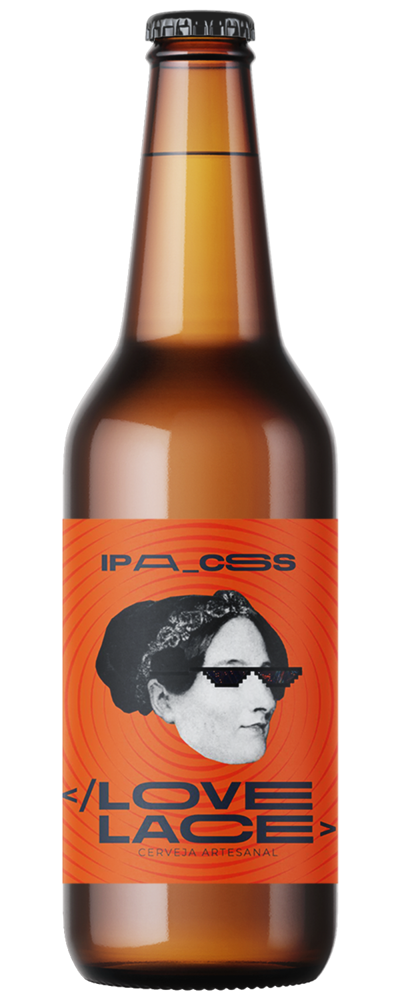
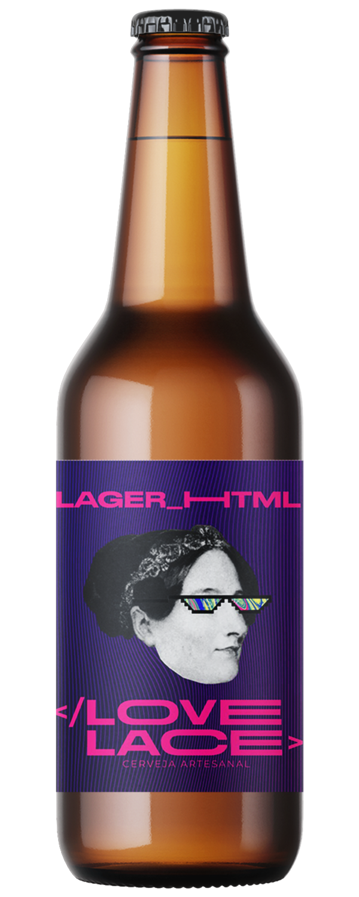
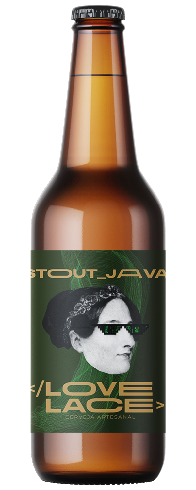

-

Ipa_CSS
Cerveja Ipa CSS - 355ml
A Ipa CSS traz a legítima fórmula utilizada pelos soldados ingleses em sua longa viagem marítima até a Índia. Detalhe: com um toque especial de jerimum. Não por acaso, foi eleita pela revista Prazeres da Mesa a Cerveja do Ano e ainda recebeu 3 estrelas na publicação inglesa Pocket Beer Guide, o mais respeitado guia de cervejas do mundo.
-

Lager_HTML
Cerveja Ipa CSS - 355ml
Uma cerveja que o nome já diz tudo. Nascida em Teresina, nossa casa, é uma lager leve e refrescante, mas com a cara de Lovelace, uma cervejaria que nunca faria mais do mesmo: cerveja clara com laranja, com IBU 20 e 4,5% de teor alcoólico com toda qualidade da primeira cervejaria artesanal do Brasil por um preço muito mais acessível do que a maioria!
-

Stout_Java
Cerveja Ipa CSS - 355ml
Com notas de torra, aromas de café e chocolate, é uma cerveja com equilíbrio perfeito entre o dulçor e amargor provenientes do malte. Prêmios: Ganhadora de medalhas de prata no Iternational Beer Challenge 2022, realizado na Inglaterra e foi considerada a Melhor Dry Stout do mundo no European Beer Star 2022.